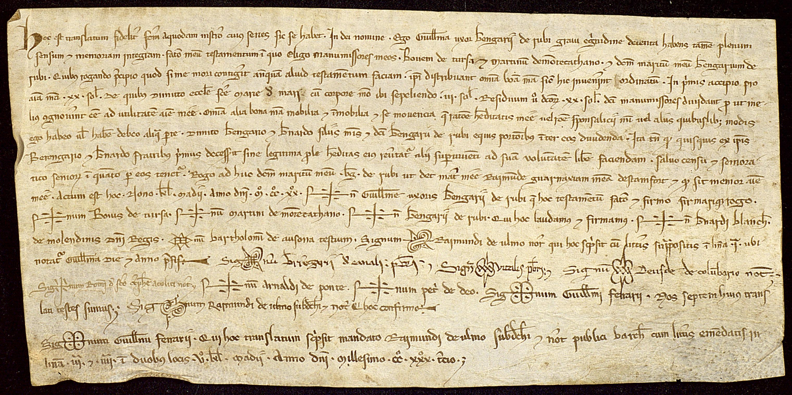

Medieval charter — annotated text line and baseline
This experiment was written by Noemi. It is a quick draft and requires deeper review.

The highlighted region is the first text line of the charter
(«Hoc est translatum fideliter factum a quodam instrumento…»).
TextLine region (oa:classifying)
Baseline (oa:identifying)